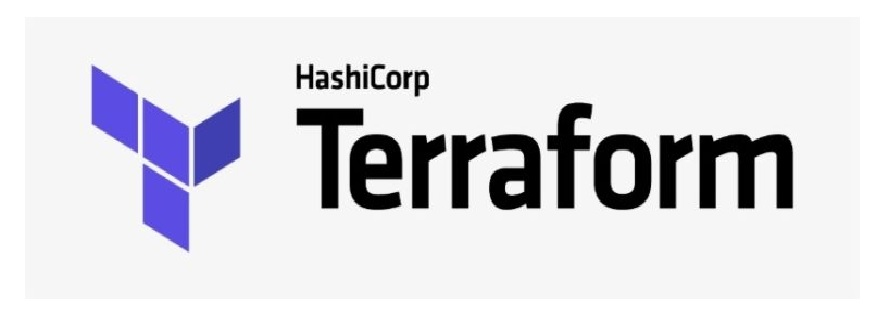

WhatsApp sharing Link
Madan DevOps
DevOps Instructor
DevOps New Batch
December 9th (Thrusday)
7:00 PM to 8:30 PM IST
WhatsApp
+9999988888

DevOps Syllabus
INTRODUCTION TO DEVOPS
What is Devops?
Why Devops?
Devops Tools
Differences between traditional methodologies and DEVOPS-approach
Big Picture of CI/CD Devops Delivery Pipeline
OPERATING SYSTEM & LINUX BASICS
Introduction to Operating Systems
Introduction to Virtual Machines
Linux File Systems
Introduction to Command Line Interface
Basic Linux Commands
Package Manager - Installing Software in Linux
Vim Text Editor
Users and Permissions
Shell Scripting
Environment Variables
SSH -Secure Shell
VERSION CONTROL SYSTEM - GIT
Introduction to VCS
Types of VCS
Difference between CVCS and DVCS
What is GIT
GIT Architecture
GIT installation on Windows and Linux
GIT commands
Working with GIT
Creating repository
Cloning repository
Committing the changes
Fetch, pull and remote
Branching Strategy in GIT
Creating the Branches
Switching the branches
Merging the branches
Git reset
Git rebase
Git stash
Working with GitHub
CONTINUOUS INTEGRATION - JENKINS
What is Jenkins?
Continuous Integration with Jenkins
Java installation and configuration
Exploring Jenkins Dashboard
Creating jobs in Jenkins
Running the Jobs
Setting up the global environment variables for Jobs
Adding and updating Plugins
Disabling and deleting jobs
Different authorization strategies in Jenkins
RBAC strategy in Jenkins
Best Practices for Jenkins
Plugin Management in Jenkins
Triggering email notifications in Jenkins
Scheduling jobs automatically in Jenkins
Poll SCM and web hooks in Jenkins
Compile, test and deploy jobs in Jenkins
Building Delivery Pipeline in Jenkins with java Maven Project
Create complete pipeline in Jenkins
Master Slave Architecture in Jenkins
Credentials in Jenkins
Adding Windows slave and run test job on windows
Adding Linux slave and configuring the job on Linux ec2 instance
Pipeline and Multi branch jobs in Jenkins
Pipeline as code in Jenkins (Jenkins file) using groovy script
Deploy to ec2-instance on AWS using Jenkins Pipeline
CONTAINERIZATION USING DOCKER
What is container?
Containerization vs Virtualization
Docker Container Vs Vms
Docker Images
Docker Architecture
Docker Installation on Linux
Understanding the Docker components
Working with Images
Docker Containers
Docker Networking
Docker Files for building our own images
Docker Volumes for data persistency
Development and Deployment with Docker containers
Building Docker image from Jenkins job
Pushing own images to Docker hub
Pushing own images to ECR on AWS
Automating Docker image push to Docker hub/ECR on AWS from Jenkinsfile
What is Docker Compose?
Writing Docker Compose File
Deploying Micro service app with Docker compose
Configuring volumes with compose file
Automate deploying from Jenkins Pipeline to EC2 Instance Using Docker run
Automate deploying from Jenkins Pipeline to EC2 Instance Using Docker-Compose
Container Orchestrator tool Docker Swarm
High availability of app , Scaling and Load balancing on Docker Swarm Cluster
Networking in Docker swarm
Creating custom overlay networks in Docker swarm cluster
Deploying multiple containers on swarm cluster via Docker compose
CONTAINER ORCHESTRATOR - KUBERNETES
Introduction to Kubernetes
Kubernetes Architecture
Exploring your Cluster
Understanding YAML configuration in kubernetes
Creating a pod object in kubernetes
Creating a Deployment in Kubernetes using YAML Preview
Creating a Service Object in Kubernetes
Creating Headless service, Node Port, Load balancer Services
Creating secrets and configmaps
Working with Daemon Sets
Deploying database application using statefulsets
Working with Persistent Volumes, Persistent volume claims
Using Rolling Updates in Kubernetes
Blue Green Deployments in Kubernetes
Canary Deployment in Kubernetes
Helm Package manager for Kubernetes
Deploying Kubernetes Dashboard with Helm
Installing Prometheus and grafana on kubernetes cluster with Helm
Monitoring Kubernetes cluster with Prometheus
Deploying micro service application using statefulsets and Persistent volumes
CONFIGURATION MANAGEMENT - ANSIBLE
Introduction to Ansible
Ansible Architecture
Push configuration in Ansible
Installation of Ansible
Adhoc commands in Ansible
Playbooks in Ansible
Modules in Ansible
Roles in Ansible
Using Roles from Ansible Galaxy
Creating our own Roles
Deploying Docker container with Ansible
Deploying Docker compose with Ansible
Complete CI/CD on Jenkins with Ansible
INFRASTRUCTURE AS CODE WITH - TERRAFORM
Introduction to Terraform
Install Terraform
Terraform Providers
Resources and Data Sources
Change and destroy terraform resources
Terraform state commands
Output values in Terraform
Variables in Terraform
Environment variables in Terraform
Version controlling Terraform files with git
Automate Provisioning Ec2 instance on AWS with Terraform
Modules in Terraform
Complete CI/CD on Jenkins with Terraform
Automate Provisioning of EKS cluster on AWS with Terraform
PROMETHEUS
What is Prometheus?
Prometheus Architecture
Prometheus Installation
Monitoring container metrics with Prometheus
Prometheus UI
Alerting rules in Prometheus
Monitoring Kubernetes cluster with Prometheus
GRAFANA
Grafana dashboard for Prometheus metrics
Grafana dashboard for kubernetes clusters